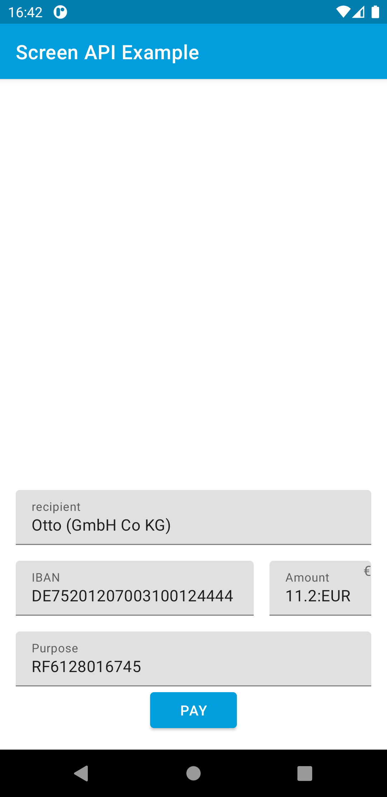

Gini Health SDK for Android¶
The Gini Health SDK for Android provides all the UI and functionality needed to use the Gini Pay API in your app to extract payment and health information from invoices. The payment information can be reviewed and then the invoice can be paid using any available payment provider app (e.g., banking app).
The Gini Pay API provides an information extraction service for analyzing health invoices. Specifically, it extracts information such as the document sender or the payment relevant information (amount to pay, IBAN, etc.). In addition it also provides a secure channel for sharing payment related information between clients.
Table of contents¶
Getting started¶
Installation¶
To install add our Maven repo to the root build.gradle file and add it as a dependency to your app module’s build.gradle.
build.gradle:
repositories {
maven {
url 'https://repo.gini.net/nexus/content/repositories/open
}
}
app/build.gradle:
dependencies {
implementation 'net.gini:gini-pay-business-sdk:1.0.5'
}
Gini Pay Deep Link For Your App¶
In order for banking apps to be able to return the user to your app after the payment has been resolved you can register one of your activities to respond to a deep link scheme known by the Gini Pay API.
You should already have a scheme and host from us. Please contact us in case you don’t have them.
The following is an example for the deep link ginipay-business://payment-requester:
<activity android:name=".YourActivity">
<intent-filter>
<action android:name="android.intent.action.VIEW" />
<category android:name="android.intent.category.DEFAULT" />
<data
android:host="payment-requester"
android:scheme="ginipay-business" />
</intent-filter>
</activity>
Gini Pay API Client Credentials¶
You should have received Gini Pay API client credentials from us. Please get in touch with us in case you don’t have them.
Continue to Authentication to see how to use the client credentials to initialize the Gini Health SDK.
Authentication¶
The entry point for the Gini Health SDK is GiniBusiness class which depends
on Gini (Gini Pay API lib) to interact with the backend.
The Gini class can be built either with client credentials (clientId and clientSecret)
or with a SessionManager if you have a token. For these two cases there are helper methods:
getGiniApi(context: Context, clientId: String, clientSecret: String, emailDomain: String)getGiniApi(context: Context, sessionManager: SessionManager)
SessionManager is an interface which you need to implement to send the token.
For more details about Gini see Gini Pay API lib.
Flow¶
GiniBusiness is the main class for interacting with the Gini Health SDK.
It provides a way to submit a document for reviewing its extracted payment details and
let’s the user make the payment with one of the payment providers.
- The recommended flow is to:
- Call
GiniBusiness.checkRequirements()to make sure that the flow can be completed. - Call one of the overloads of
setDocumentForReview, to submit a document. - Display
ReviewFragment.
- Call
Checking requirements¶
Requirements are not enforced, but recommended. Review Fragment will still start, but the flow cannot be completed if not all requirements are met.
checkRequirements() returns a list of missing requirements. Empty list means all requirements are met.
Setting a document for review¶
setDocumentForReviewcan be called with:Documentinstance in the case the upload was performed with Gini Pay Api lib (seeGiniclass).- Document id, this will probably be the case when there’s backend integration between the client and Gini.
When calling it with an id the SDK will make a network call to obtain a Document instance.
So it is preferred to use the Document instance if you already have it.
The same applies to the optional PaymentDetails, if they are present they will be displayed
and network calls to get extractions will be skipped.
The exposed flows of GiniBussines are used by the ReviewFragment to observe the state of the document and extractions, but they are public
so that they can be observed anywhere, the main purpose for this is to observe errors.
Note: If you observe payment details flow, you can check PaymentDetails.isPayable as an extra condition before displaying the ReviewFragment.
Display ReviewFragment¶
ReviewFragment displays document pages and extractions and it lets the user pay using a payment provider
To instantiate it you need to create a FragmentFactory and set it to fragment manager:
class ReviewFragmentFactory(private val giniBusiness: GiniBusiness) : FragmentFactory() {
override fun instantiate(classLoader: ClassLoader, className: String): Fragment {
return ReviewFragment(giniBusiness)
}
}
supportFragmentManager.fragmentFactory = ReviewFragmentFactory(giniBusiness)
ReviewFragment handles errors by default, displaying snackbars for errors, but it
can be configured to ignore them, in which case all flows of GiniBusiness should
be observed for errors.
Testing¶
Requirements¶
Example banking app¶
To pass the requirements for the Gini Health SDK a supported banking app has to be installed on the device running your app.
An example banking app is available in the Gini Pay Bank SDK’s
repository called appscreenapi.
You can use the same Gini Pay API client credentials in the example banking app as in your app, if not otherwise specified.
Development Gini Pay API client credentials¶
In order to test using our example banking app you need to use development client credentials. This will make sure the Gini Health SDK uses a test payment provider which will open our example banking app.
End to end testing¶
After you’ve set the client credentials in the example banking app and installed it on your device you can run your app
and verify that GiniBusiness.checkRequirements() returns an empty list.
Following the flow guide show the ReviewFragment after analyzing a document.
Check that the extractions and the document preview are shown and then press the Pay button:

You should be redirected to the example banking app where the final extractions are shown:
{kind=link}
After you press the Pay button the Gini Pay Bank SDK resolves the payment and allows you to return to your app:

With these steps completed you have verified that your app, the Gini Pay API, the Gini Health SDK and the Gini Pay Bank SDK work together correctly.
Testing in production¶
The steps are the same but instead of the development client credentials you will need to use production client credentials. This will make sure the Gini Health SDK receives real payment providers which open real banking apps.
You will also need to install a banking app which uses the Gini Pay Bank SDK. Please contact us in case you don’t know which banking app(s) to install.
Lastly make sure that for production you register the scheme we provided you for deep linking and you are not using ginipay-business://payment-requester.
Customization¶
Customization of is achieved through Android’s resourcing system. This means that all resources of the library can be overridden by providing resources with the same name in the application.
Material components are used so for in the ReviewFragment, so those components will pick attributes of the hosting activity if it uses a Material Theme.
Some attributes are set inside the library (styles that start with
Root.) to provide the basic UI, but you can hook into the other
styles to customize the screen further.
License¶
The Gini Health SDK are licensed under a Private License and also integrate several third party libraries.
Important
Always make sure to ship all license notices and permissions with your application.
Copyright (c) 2014-2021, Gini GmbH
All rights reserved.
The Gini Health SDK is licensed through Gini GmbH ("Gini") and may not be
used, altered or copied in any way without explicit permission by Gini. The
terms of usage are defined in a separate usage agreement between Gini and the
licensee, where the licensee can gain access to a non-exclusive,
non-transferable usage right which is restricted for the time of a contractual
relationship between Gini and the licensee.
For license related inquiries contact Gini via the email address
technical-support@gini.net.